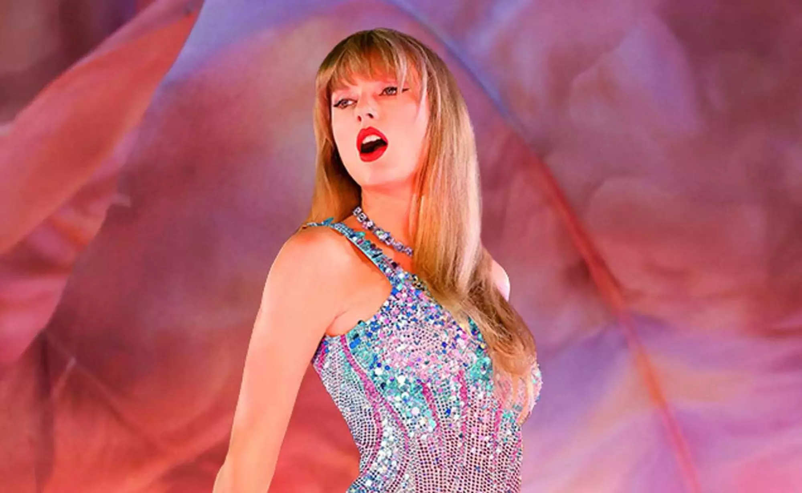

Taylor Alison Swift (born December 13, 1989) is an American singer-songwriter. Known for her autobiographical songwriting, artistic reinventions, and cultural impact, Swift is the highest-grossing live music artist, the wealthiest female musician, and one of the best-selling music artists of all time.
Swift signed with Big Machine Records in 2005 and debuted as a country singer with the albums Taylor Swift (2006) and Fearless (2008). The singles "Teardrops on My Guitar", "Love Story", and "You Belong with Me" found crossover success on country and pop radio formats. Speak Now (2010) expanded her country pop sound with rock influences, and Red (2012) featured a pop-friendly production. She recalibrated her artistic identity from country to pop with the synth-pop album 1989 (2014); ensuing media scrutiny inspired the hip-hop-imbued Reputation (2017). Through the 2010s, she accumulated the US Billboard Hot 100 number-one singles "We Are Never Ever Getting Back Together", "Shake It Off", "Blank Space", "Bad Blood", and "Look What You Made Me Do".
After Swift signed with Republic Records in 2018, she released the eclectic pop album Lover (2019), the indie folk albums Folklore and Evermore (both 2020), the electropop record Midnights (2022), and the double album The Tortured Poets Department (2024). In the 2020s, she re-recorded four of her Big Machine albums due to a dispute with the label and garnered the US number-one singles "Cardigan", "Willow", "All Too Well (10 Minute Version)", "Anti-Hero", "Cruel Summer", "Is It Over Now?", and "Fortnight". Her 2023-2024 concert tour, the Eras Tour, is the first to gross $1 billion in revenue. Its accompanying concert film, Taylor Swift: The Eras Tour (2023), became the highest-grossing in history.
Swift is the only artist to have been named the IFPI Global Recording Artist of the Year five times. A record seven of her albums have each sold over a million copies first-week in the US. Publications such as Rolling Stone and Billboard have ranked Swift among the greatest artists of all time. She is the first individual from the arts to be named Time Person of the Year (2023). Her accolades include 14 Grammy Awards—including a record four Album of the Year wins—and a Primetime Emmy Award. Swift is the most-awarded artist of the American Music Awards, the Billboard Music Awards, and the MTV Video Music Awards. A subject of extensive media coverage, she has a global fanbase known as Swifties.